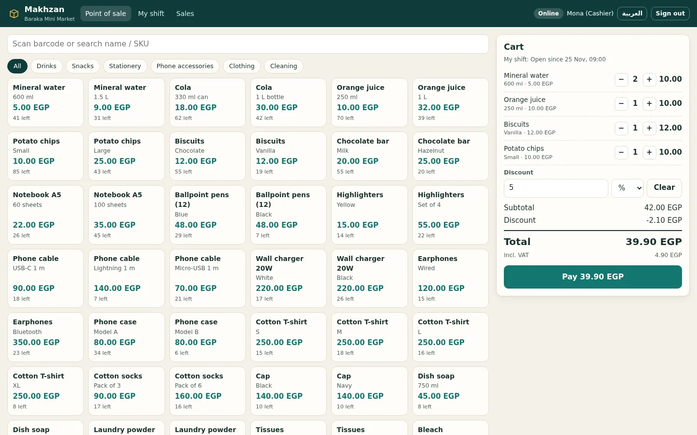
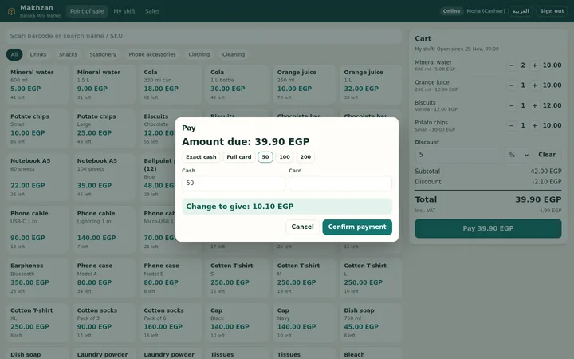
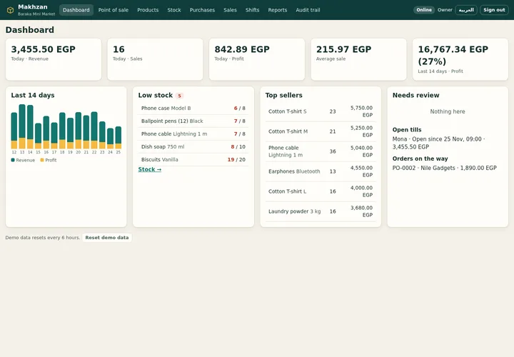
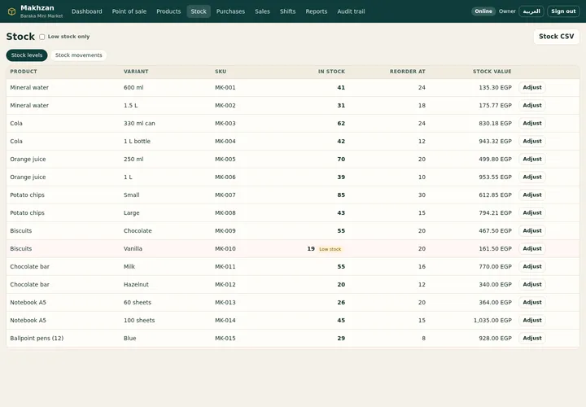
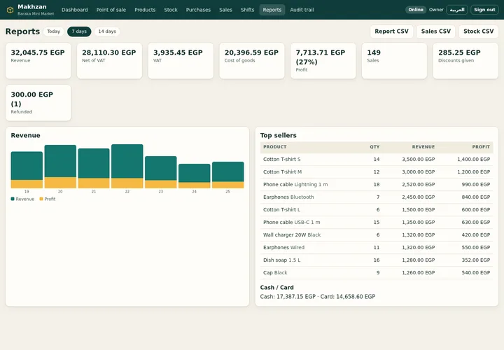
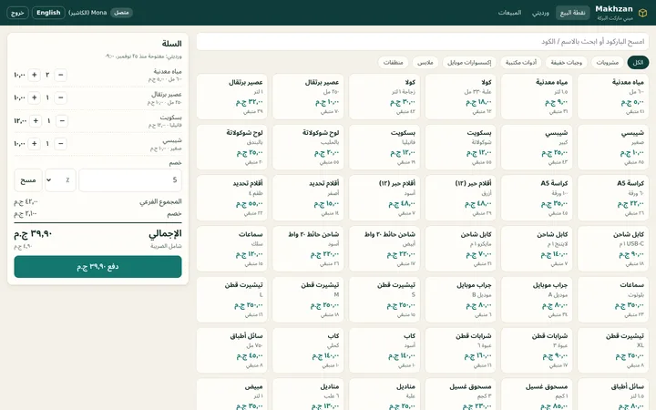
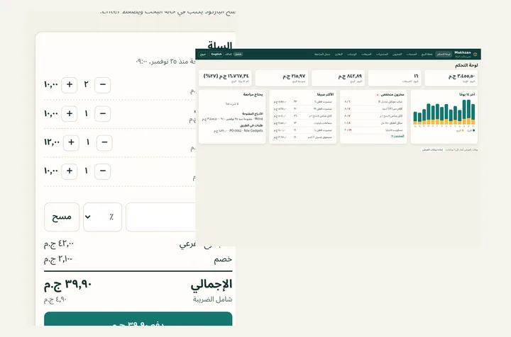
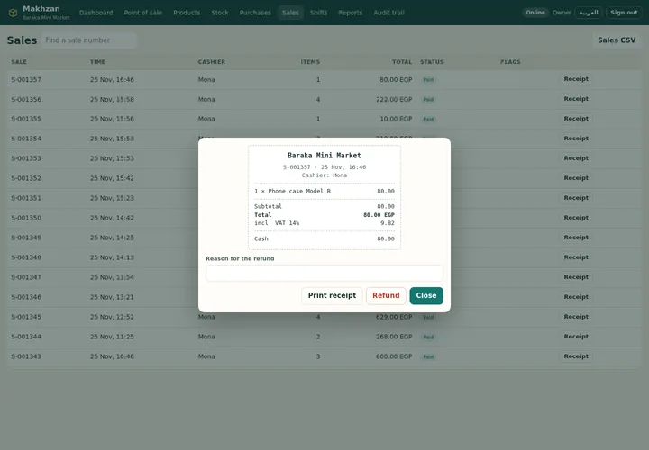

PORTFOLIO DEMO / BUILT / LIVE DEMO
Makhzan
The whole shop, counted at the till.

ACTUAL BUILDMakhzan · Cashier screen. Fictional shop and demo data.
The problem
A small shop in Cairo often runs on a paper notebook, a calculator and memory. Nobody knows what is really in stock until a shelf is empty, prices live in the owner's head, a cashier can give any discount, and at the end of the day the cash in the drawer is counted and compared to nothing. When the internet drops, a card-only till stops selling.
What was built
An inventory and point-of-sale system with two sides. The cashier screen takes a barcode scan or a typed name or SKU, adds items to a cart (products have variants such as size, volume or colour, each with its own barcode, price and stock), applies a discount, and takes payment in cash, card or both, with live change. A cashier can discount up to 10 percent; anything more is refused and needs the owner. The sale prints a receipt with the VAT shown. Each cashier opens a shift with opening cash and closes it with the counted cash; the system compares it to what the till should hold and asks for a note when the numbers differ.
The owner side has a dashboard (today's revenue, profit, best sellers, low stock, open tills, orders on the way, sales that need review), products with variants, stock levels with reorder points and low-stock alerts, stock adjustments that always need a reason, purchase orders to suppliers that add stock and move the average cost when received, a sales list with full-sale refunds, shift history with the cash difference, and reports for revenue, VAT, cost, profit and margin with CSV export. The interface is fully Arabic right-to-left or English.
The approach
No framework: plain JavaScript pages, one serverless API function and one pure logic file that holds every business rule (money in whole piasters, VAT inside the price, discounts, payment checks, stock, shifts, refunds, reports). The same file runs in the API, in the browser and in the tests. Roles are enforced on the server: a cashier cannot adjust stock, refund, edit products or receive purchases, and the cashier view of the data contains no cost fields at all. Every change to stock is written to a movement log and an audit trail with who did it.
The till is offline-first. After a first sign-in, the app opens from a service worker and a saved copy of the catalog. Sales made with no connection wait in a queue on the device with a unique id and are sent when the connection returns, so a retry never charges or deducts twice. The server checks them: the price must be the current price or one of the last five, otherwise the sale is refused and shown to the cashier with the reason; stock may go below zero offline and is flagged for review; a sale that syncs after its shift closed is kept but stays out of that shift's cash.
The result
A live demo anyone can open. Sign in as the owner (PIN 1111) or as a cashier (2222 or 3333); the PINs are on the sign-in screen. The sample shop has 38 items in 20 products, two weeks of sales, two suppliers, shifts with small cash differences, low-stock alerts and one order on the way. Verification: 20 business-rule tests, 41 browser checks run against the live site (including role limits, the discount limit, hostile text shown as plain text, CSV export and Arabic RTL) and 17 offline checks (sell with no connection, reload offline, reconnect, each sale delivered exactly once, a refused sale shown to the cashier).
Evidence & production limits
One shared demo workspace that resets every six hours: everyone sees and changes the same data. Sign-in is a PIN printed on the sign-in screen, so it must not hold real shop data. The shop, items, prices, sales and people are fictional. Card payments are recorded, not processed, and no card terminal is connected. Receipts print through the browser, not a thermal printer, and barcodes work with a keyboard-style scanner, not the camera.
Known gaps: state is one file in Vercel Blob, so two saves at the same instant can overwrite each other; offline selling needs a first online sign-in on that device, and shifts and back-office work need a connection; VAT is a flat 14 percent with no Egyptian tax authority e-receipt integration; refunds are for a whole sale only; there are no customers or loyalty. Implementation: AI-assisted (Instinct), with direction and scope from Nada Gamal.
Next chapter
Real accounts with hashed passwords, a proper database with transactions, partial returns, a thermal printer and cash-drawer connection, camera barcode scanning and tax e-receipt integration would be the next implementation steps.
Inside the build
Open any preview to see the full capture. Captures show test or demonstration content. All records shown are demonstration content, not evidence of client use.






